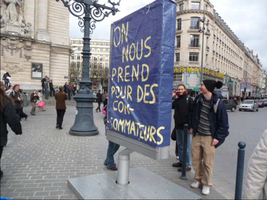

| |
Site dédié à la publication d'informations communiquées par le Collectif des déboulonneurs. En aucun cas ce site n'appelle à des actions illégales. | |
 |
||
|
Accueil du site > Lille > Compte-rendu de l’action à Lille juin 2010
Vendredi dernier, les Déboulonneurs lillois ont encore frappé ! En effet, une quinzaine de leurs membres, parmi lesquels on pouvait compter trois adorables bambins, se sont réunis place Rihour pour la 29e action du collectif. Au programme : bâchage du panneau situé au pied du métro puis, barbouillage de la sucette située en face et d’une autre, rue Nationale. C’est Séb qui lance le mouvement pour expliquer, comme il est de rigueur avant chaque action, son principe et les convictions du groupe. Sous le soleil de fin d’après-midi, de nombreux consommateurs en terrasse prêtent attention au discours. Sous le panneau à bâcher, bonne surprise : trois policiers nous attendent (il se peut qu’ils soient présents en raison d’un match de football qui se déroule dans le même temps). Ceux-ci demandent ce que nous avons l’intention de faire et quel est le contenu du message. C’est une des bâches ayant été préparées à l’occasion du village artiviste en mars, qui dit : « La rue est vendue à la pub ». Les Déboulonneurs entonnent donc leurs chansons préférées : « (H)exaction » et « Le Barbouilleur », accompagnées cette fois-ci à la guitare, ce qui n’est pas sans ajouter à la convivialité du moment. Sans heurt, le collectif, suivi par quelques intéressés, se dirige vers la sucette devant la pharmacie pour le barbouillage d’Aless. Avant même d’avoir fini de barbouiller, il est interpellé par les policiers qui souhaitent l’emmener avec eux au commissariat. 
Le groupe est satisfait. En effet, on le rappelle, un des buts de l’action est de se faire interpeller afin d’ouvrir un procès permettant de faire valoir les revendications du groupe, la réduction du format de l’affichage publicitaire à 50x70 cm maximum. Malheureusement, alors qu’Aless, sous les chants et applaudissements des joyeux Déboulonneurs, est quasiment parti, accompagné par six policiers, il est relâché car ceux-ci n’ont pas l’autorisation de leurs supérieurs. Sommer d’arrêter les dégradations, la bombe confisquée, Aless, désobéissance oblige, dégaine un deuxième aérosol et reprend l’action. Puis ce sont Laetitia (et Solen) qui finissent d’inscrire le slogan particulièrement d’actualité : « La pub championne de l’immonde 2010 ». Le groupe décide alors de poursuivre sa route rue Nationale, afin de barbouiller la sucette devant La Brioche Dorée. Ce sont Laetitia et Aless qui vont inscrire successivement : « Anticipons la retraite de la pub » et « Pub : 50 cm x 70 cm maxi partout en France ». Alors qu’il n’y a toujours aucun journaliste, une camionnette de 5 CRS s’arrête. Et l’un d’eux de demander si le collectif est au courant qu’il est interdit de taguer... Quoi qu’il en soit, sous le regard des passants et les chants renouvelés du groupe, Aless est soigneusement embarqué à l’arrière de la camionnette, laissant femme et enfant à quai. En attendant de ses nouvelles, le groupe se sépare (certains fêtant ça au café...), content de cette action réussie ! |
|
Site utilisant SPIP - Hébergement Ouvaton
|